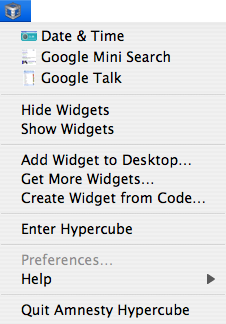
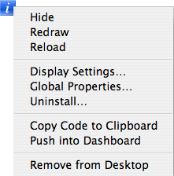

Help Sections
1. Managing widgets in the Hypercube
2. Managing widgets on the Desktop
Managing widgets in the Hypercube
The Hypercube is an off-desktop environment where you can open, manage and run widgets, similar to Apple's Dashboard layer. It is made up of one or more Cubes, each with its own set of widgets. Only one Cube may be visible at a time.
Widget management in the Hypercube is accomplished by using the Control Bubble Icons in the top right corner of your main monitor. The following table describes the main Control Bubble Icons available in the current release of Amnesty Hypercube:
 |
Opens the Widget Gallery, a list of every widget installed in Amnesty Hypercube on your machine. Clicking a widget icon in the gallery adds the widget to your current Cube. If the widget already exists in your Cube, it will come to the front. Clicking the widget icon again hides the widget, though its position and settings in your Cube will be saved. |
 |
Opens the Cube Gallery, a list of the Cubes that make up your Hypercube. Clicking a cube icon in the gallery switches the Hypercube's portal to that Cube, meaning that the current Cube is hidden as the newly-selected Cube and its widgets appear in its place. |
 |
Opens the Provider Gallery, a list of web widget providers on the Internet whose web widget HTML codes are recognized by Amnesty Hypercube's NoClick widget creation technology. NoClick automatically creates a widget when HTML code is copied to the clipboard. Installing a new widget into Amnesty Hypercube is as easy as finding a widget via the Provider Gallery and copying its HTML code – NoClick will take care of the rest. |
Managing widgets on the Desktop
Widget management on the desktop is accomplished by clicking on the Amnesty Hypercube icon which is installed in your system menubar (or system tray). This will reveal a pull down menu with various commands:
|  | The first section of the menu lists any widgets that you have added to the desktop. Selecting a widget from this list makes the widget visible (a check will appear next to its name indicating that it is visible). Selecting a widget again will hide the widget. Hide Widgets hides any visible widgets on the desktop and Show Widgets makes all the widgets listed in the menu visible. Add Widgets to Desktop opens the Widget Gallery. It behaves exactly like the Widget Gallery in the Hypercube (see previous section), except that widgets are added to the desktop. Get More Widgets opens the Provider Gallery. It behaves exactly like the Provider Gallery in the Hypercube (see previous section) except that newly installed widgets are created on the desktop. Create Widget from Code reveals a window in which you may paste HTML code from any website, including sites that do not appear in the Provider Gallery. The pasted code must be valid HTML in order for the widget creation to succeed. |
Working with Widgets
A widget can be controlled by clicking the blue Info icon that appears in the top right corner of the widget when you mouse into it. This will reveal a pop up menu with various commands:
|  |
Display Settings opens a panel in which you can control the widget's desktop level, opacity, dragging preference and background color. These settings apply only to the current location (Desktop or Cube) in which the widget is visible. Global Properties opens a panel in which you can set the widget name and advanced properties properties such as how the widget uses your computer's processor and whether the widget is loaded from a local or remote page. These settings apply to all the locations in which the widget may appear. Uninstall opens a panel that asks for confirmation to uninstall the widget. When a widget is uninstalled it is permanently removed from Amnesty Hypercube on your machine. Copy Code to Clipboard copies the widget's HTML code to the clipboard for publishing outside of Amnesty Hypercube. Push into Dashboard hides the widget and "pushes" it into your OS X Dashboard. Remove from Desktop/Cube removes the widget from its current location (Desktop or Cube). Its position and settings will be lost. |